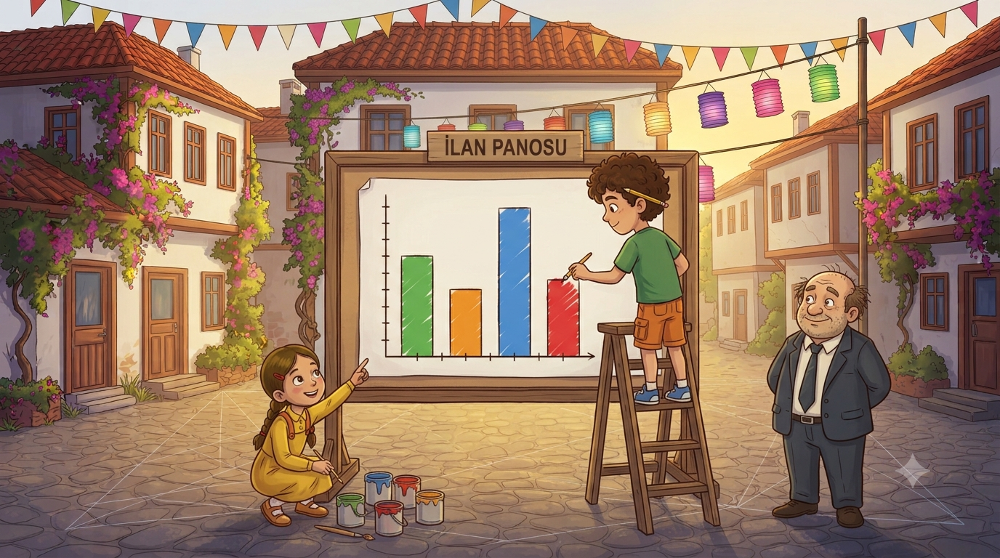
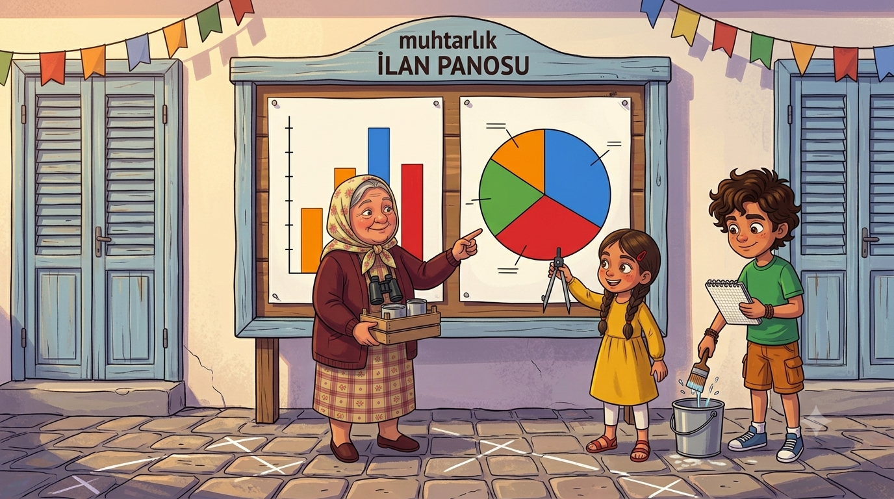
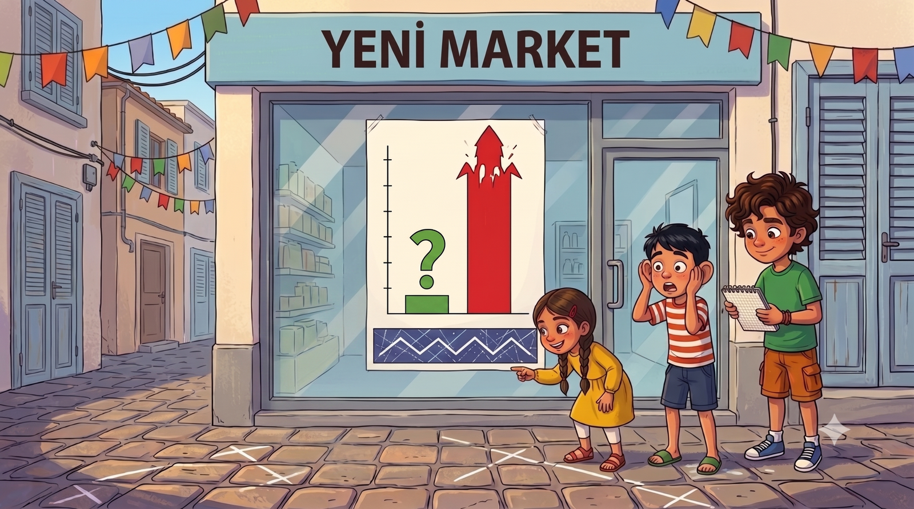
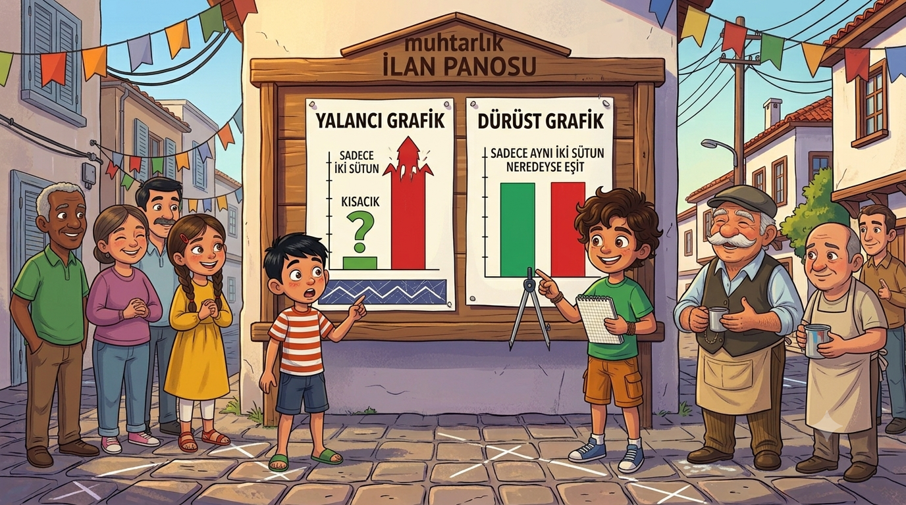

Anket bitti ama tablo panoda kimsenin dikkatini çekmiyor; sayılar konuşuyor da kimse dinlemiyor. Çözüm: GRAFİK! Ama tam mahalle grafiği öğrenmişken yeni market vitrinine öyle bir grafik asıyor ki... Grafik yalan söylemez derler; peki ya yanlış gösterirse? İstatistik dedektifleri iş başında!
Anket sonuçlarını panoya asalı bir hafta olmuştu. Tablo oradaydı, sayılar oradaydı; ama insanlar önünde on saniye durup "eh, güzel" deyip geçiyordu. Muhtar dertliydi: "Bu tabloyu belediye meclisinde sunacağım. Meclis üyesi dediğin meşgul adamdır; on saniyede anlamazsa on birinci saniyede uyur."
Elif çözümü biliyordu: "Tabloyu grafiğe çevireceğiz. Grafik, sayıların resmidir; bir bakışta anlaşılır." Muhtar bunu duyar duymaz unvan dağıtım törenine geçti: "Grafik Genel Sorumlusu!" On ikinci unvan. Dedem artık unvanlarımı köstekli saatinin zincirine çentik atarak takip ediyor.
Panoya dev bir kâğıt gerdik. Elif kuralları saydı, ben çizdim: "Sütunların genişliği eşit olacak. Aralar eşit olacak. Sayı ekseni sıfırdan başlayacak ve eşit aralıklarla artacak. Eksenlerin adını yaz: altta seçenekler, yanda oy sayısı." Bank 24, kaydırak 18, basket 15, çiçek 12 — dört renkli sütun yan yana dizildi. Geri çekilip baktık: tablo konuşuyordu, grafik bağırıyordu. En uzun sütun her şeyi anlatıyordu.

Ertesi gün Mübeccel Teyze grafiğin önünde durdu, inceledi, beğendi ama bir itirazı vardı: "Güzel de evladım, bu çubuklardan benim bankın bütünün ne kadarı olduğu görünmüyor. Pastanın kaçta kaçı bende, onu isterim." Pasta lafı geçince Elif'in gözleri parladı: "Mübeccel Teyze daire grafiği istiyor!"
İkinci kâğıda kocaman bir daire çizdik — pergelle tabii, biz o işi biliyoruz. Elif anlattı: "Bütün daire, oyların TAMAMI: 69 oy, yani yüzde yüz. Her seçenek, payı kadar dilim alır." Bank pastanın üçte birinden fazlasını kaplayınca Mübeccel Teyze'nin keyfi yerine geldi: "İşte şimdi oldu. Benim dilim, pastanın en büyüğü." Doğum gününden beri mahallede "pay" kelimesi geçince herkes önce Mübeccel Teyze'ye bakıyor zaten.
📊 Defterime not aldım:Sütun grafiği karşılaştırma için birebir: eşit genişlik, eşit aralık, eksen 0'dan! Daire grafiği parça-bütün ilişkisini gösterir: bütün daire = %100, her dilim kategorinin payı.

Derken kriz patladı. Yeni market, vitrinine kocaman bir grafik astı: "FİYATLAR KONUŞUYOR!" Grafikte iki sütun vardı: marketin sütunu kısacık, bizim bakkalın sütunu gökdelen gibi. Emre grafiği görür görmez koşarak geldi: "Bakkal bizi kazıklıyormuş! Grafik var, kanıt var!" Mahallede homurtu başladı. Dedem grafiğe baktı, kasketini kaldırdı ama bir şey demedi; sadece bana baktı. Bu bakışı tanıyorum: "hadi evlat, iş başına" bakışı.
Elif'le vitrine gittik, dedektif gibi inceledik. Fiyatlar doğruydu: bizde 92, onlarda 90 lira. Peki iki liralık fark nasıl gökdelen olmuştu? Elif ekseni gösterdi: "Buldum! Sayı ekseni 0'dan değil, 89'dan başlıyor! Böyle olunca 2 liralık fark, koca bir uçurum gibi görünüyor. Grafik yalan söylemiyor ama yanlış gösteriyor."
Emre'nin ağzı açık kaldı: "Yani grafik de mi tuzak kurar?" — "Grafik kurmaz," dedi Elif, "çizen kurar. O yüzden grafiğe bakarken önce eksenine bakacaksın. Buna istatistik okuryazarlığı denir." Emre o gün üçüncü büyük dersini aldı: kısa sayı ucuz değildir, iri dilim çok değildir, uzun sütun her zaman haklı değildir.
🕵️ Defterime not aldım:Yanıltıcı grafik tuzakları: eksen 0'dan başlamaz, sütun genişlikleri eşit değildir, aralıklar düzensizdir. Grafiğe bakarken önce ekseni ve ölçeği kontrol et — istatistik okuryazarı ol!

Ertesi sabah panoya kendi grafiğimizi astık: aynı iki fiyat, ama eksen sıfırdan başlıyor. İki sütun neredeyse aynı boydaydı; aradaki fark, olduğu kadar görünüyordu: küçücük. Altına Elif'in el yazısıyla bir not: "Aynı veriler. Dürüst eksen." Mahalleli iki grafiği yan yana görünce olayı anladı; homurtu, kahkahaya döndü.
Marketin sahibi öğlen bakkala geldi; mahcuptu: "Grafiği reklamcı yeğenim yapmıştı, ben anlamam demiştim, olmuş bu." Dedem çayını uzattı: "Otur, anlatalım. Anlamamak ayıp değil, öğrenmemek ayıp." Yarım saat sonra marketin vitrininde düzeltilmiş grafik asılıydı — eksen sıfırdan. Dedem bir de şerh düştü: "Fiyat dediğin haftaya değişir; grafik bugünün fotoğrafıdır, yarının sözü değil." Elif buna verilerin değişebilirliği dendiğini fısıldadı.
Akşam muhtar geldi; elinde belediye meclisi davetiyesi: "Sayın Grafik Sorumlusu! Yarın meclis huzurunda park grafiğini sunacaksınız! Ama önce bilgilerinizi denetleyeceğim — meclis, yanlışı affetmez!"
📰 Defterime not aldım: Aynı veri, dürüst eksenle bambaşka görünür! Verilerin değişebilirliği: veriler zamanla değişir; grafik, toplandığı günün fotoğrafıdır. Karar verirken verinin ne zaman toplandığına da bak!

Meclis Öncesi Denetim! 🎯
Muhtar grafik bilgini sınıyor. Her soruda doğru cevabı seç, meclise hazır ol!
⭐ Puan: 0❓ Soru: 1/5
📊 Meclis Alkışladı!
Sunum on saniyede anlaşıldı, kimse uyumadı; belediye bank ve çardağın bütçesini oybirliğiyle onayladı. Meclis başkanı grafiği çerçeveletmek istedi. Mübeccel Teyze çardağın kurdele tarihini şimdiden sordu.
Kâşif Defteri — bugün öğrendiklerimiz:
• Sütun grafiği: eşit genişlik, eşit aralık, eksen 0'dan, eksen adları yazılır
• Daire grafiği: bütün = %100; dilim = kategorinin payı (parça-bütün)
• Yanıltıcı grafik: 0'dan başlamayan eksen küçük farkı dev gösterir!
• Grafiğe bakarken önce ekseni ve ölçeği kontrol et
• Verilerin değişebilirliği: grafik, toplandığı günün fotoğrafıdır